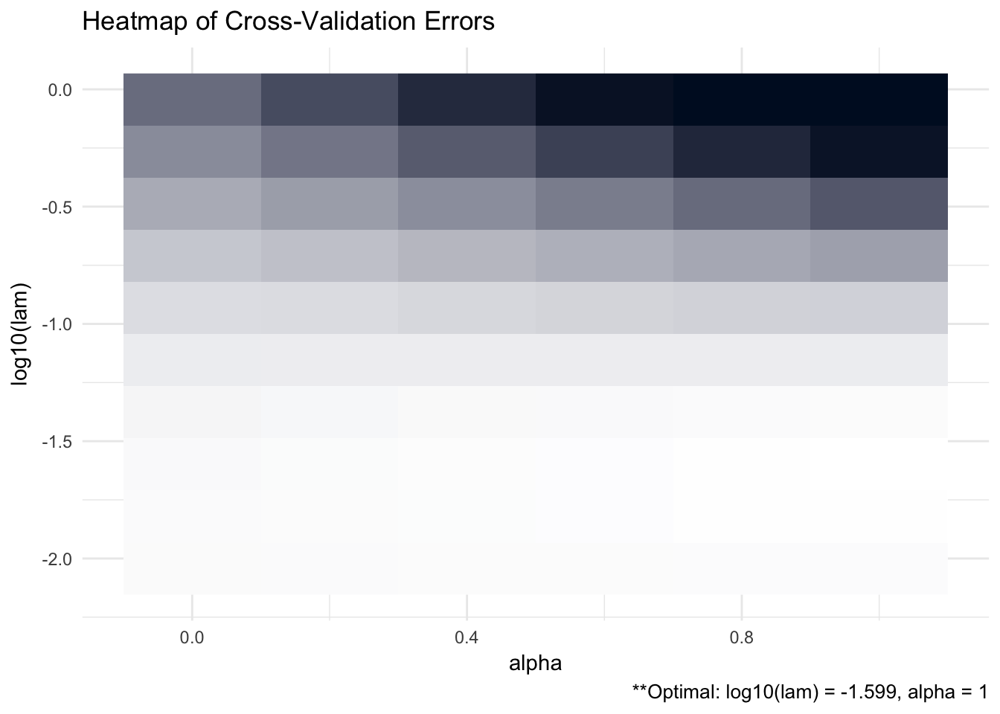
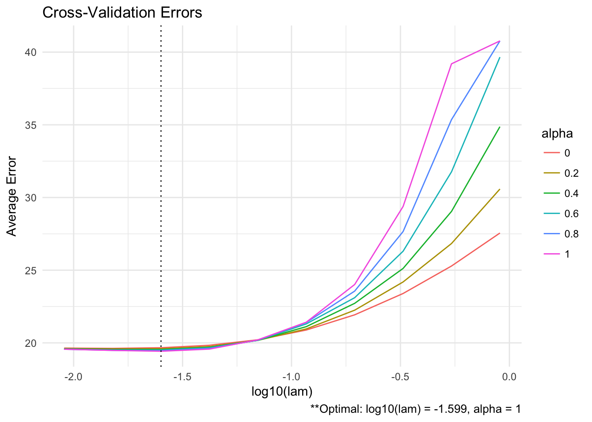
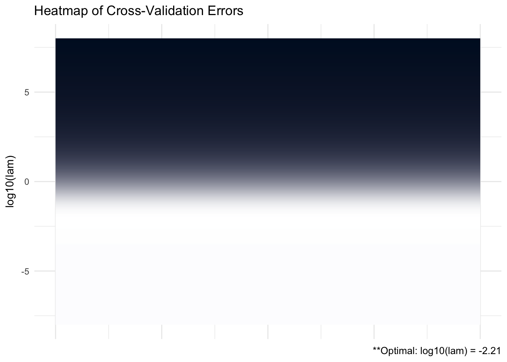
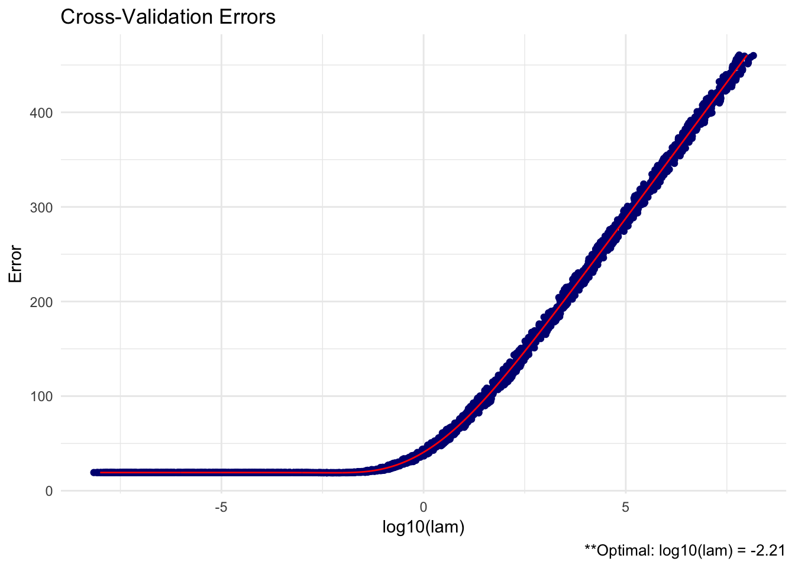

Chapter 3 Tutorial
# The easiest way to install is from CRAN
install.packages("ADMMsigma")
# You can also install the development version from GitHub:
# install.packages('devtools')
devtools::install_github("MGallow/ADMMsigma")If there are any issues/bugs, please let me know: github. You can also contact me via my website. Pull requests are welcome!
A (possibly incomplete) list of functions contained in the package can be found below:
ADMMsigma()computes the estimated precision matrix (ridge, lasso, and elastic-net type regularization optional)RIDGEsigma()computes the estimated ridge penalized precision matrix via closed-form solutionplot.ADMMsigma()produces a heat map or line graph for cross validation errorsplot.RIDGEsigma()produces a heat map or line graph for cross validation errors
3.1 Usage
We will first generate data from a sparse, tri-diagonal precision matrix and denote it as Omega.
library(ADMMsigma)
# generate data from a sparse matrix first compute covariance matrix
S = matrix(0.7, nrow = 5, ncol = 5)
for (i in 1:5) {
for (j in 1:5) {
S[i, j] = S[i, j]^abs(i - j)
}
}
# print oracle precision matrix (shrinkage might be useful)
(Omega = round(qr.solve(S), 3))## [,1] [,2] [,3] [,4] [,5]
## [1,] 1.961 -1.373 0.000 0.000 0.000
## [2,] -1.373 2.922 -1.373 0.000 0.000
## [3,] 0.000 -1.373 2.922 -1.373 0.000
## [4,] 0.000 0.000 -1.373 2.922 -1.373
## [5,] 0.000 0.000 0.000 -1.373 1.961# generate 100 x 5 matrix with rows drawn from iid N_p(0, S)
set.seed(123)
Z = matrix(rnorm(100 * 5), nrow = 100, ncol = 5)
out = eigen(S, symmetric = TRUE)
S.sqrt = out$vectors %*% diag(out$values^0.5) %*% t(out$vectors)
X = Z %*% S.sqrt
# snap shot of data
head(X)## [,1] [,2] [,3] [,4] [,5]
## [1,] -0.4311177 -0.217744186 1.276826576 -0.1061308 -0.02363953
## [2,] -0.0418538 0.304253474 0.688201742 -0.5976510 -1.06758924
## [3,] 1.1344174 0.004493877 -0.440059159 -0.9793198 -0.86953222
## [4,] -0.0738241 -0.286438212 0.009577281 -0.7850619 -0.32351261
## [5,] -0.2905499 -0.906939891 -0.656034183 -0.4324413 0.28516534
## [6,] 1.3761967 0.276942730 -0.297518545 -0.2634814 -1.35944340As described earlier in the report, the maximum likelihood estimator (MLE) for Omega is the inverse of the sample precision matrix \(S^{-1} = \left[\sum_{i = 1}^{n}(X_{i} - \bar{X})(X_{i} - \bar{X})^{T}/n \right]^{-1}\):
# print inverse of sample precision matrix (perhaps a bad estimate)
round(qr.solve(cov(X) * (nrow(X) - 1)/nrow(X)), 5)## [,1] [,2] [,3] [,4] [,5]
## [1,] 2.32976 -1.55033 0.22105 -0.08607 0.24309
## [2,] -1.55033 3.27561 -1.68026 -0.14277 0.18949
## [3,] 0.22105 -1.68026 3.19897 -1.25158 -0.11016
## [4,] -0.08607 -0.14277 -1.25158 2.76790 -1.37226
## [5,] 0.24309 0.18949 -0.11016 -1.37226 2.05377However, because Omega (known as the oracle) is sparse, a shrinkage estimator will perhaps perform better than the sample estimator. Below we construct various penalized estimators:
##
## Call: ADMMsigma(X = X, tol.abs = 1e-08, tol.rel = 1e-08)
##
## Iterations: 162
##
## Tuning parameters:
## log10(lam) alpha
## [1,] -1.599 1
##
## Log-likelihood: -108.41003
##
## Omega:
## [,1] [,2] [,3] [,4] [,5]
## [1,] 2.15283 -1.26902 0.00000 0.00000 0.19765
## [2,] -1.26902 2.79032 -1.32206 -0.08056 0.00925
## [3,] 0.00000 -1.32206 2.85470 -1.17072 -0.00865
## [4,] 0.00000 -0.08056 -1.17072 2.49554 -1.18959
## [5,] 0.19765 0.00925 -0.00865 -1.18959 1.88121LASSO:
##
## Call: ADMMsigma(X = X, alpha = 1)
##
## Iterations: 66
##
## Tuning parameters:
## log10(lam) alpha
## [1,] -1.599 1
##
## Log-likelihood: -108.41022
##
## Omega:
## [,1] [,2] [,3] [,4] [,5]
## [1,] 2.15228 -1.26841 0.00000 0.00000 0.19744
## [2,] -1.26841 2.78830 -1.31943 -0.08246 0.01018
## [3,] 0.00000 -1.31943 2.84979 -1.16708 -0.01015
## [4,] 0.00000 -0.08246 -1.16708 2.49277 -1.18844
## [5,] 0.19744 0.01018 -0.01015 -1.18844 1.88069ELASTIC-NET:
##
## Call: ADMMsigma(X = X, alpha = 0.5)
##
## Iterations: 67
##
## Tuning parameters:
## log10(lam) alpha
## [1,] -1.821 0.5
##
## Log-likelihood: -101.13595
##
## Omega:
## [,1] [,2] [,3] [,4] [,5]
## [1,] 2.20031 -1.32471 0.01656 -0.00334 0.21798
## [2,] -1.32471 2.90659 -1.37599 -0.19084 0.13651
## [3,] 0.01656 -1.37599 2.92489 -1.12859 -0.12033
## [4,] -0.00334 -0.19084 -1.12859 2.56559 -1.23472
## [5,] 0.21798 0.13651 -0.12033 -1.23472 1.94528RIDGE:
##
## Call: ADMMsigma(X = X, alpha = 0)
##
## Iterations: 65
##
## Tuning parameters:
## log10(lam) alpha
## [1,] -1.821 0
##
## Log-likelihood: -99.19746
##
## Omega:
## [,1] [,2] [,3] [,4] [,5]
## [1,] 2.18979 -1.31533 0.04515 -0.04090 0.23511
## [2,] -1.31533 2.90019 -1.37049 -0.22633 0.17808
## [3,] 0.04515 -1.37049 2.89435 -1.07647 -0.17369
## [4,] -0.04090 -0.22633 -1.07647 2.55026 -1.22786
## [5,] 0.23511 0.17808 -0.17369 -1.22786 1.95495##
## Call: RIDGEsigma(X = X, lam = 10^seq(-8, 8, 0.01))
##
## Tuning parameter:
## log10(lam) lam
## [1,] -2.17 0.007
##
## Log-likelihood: -109.18156
##
## Omega:
## [,1] [,2] [,3] [,4] [,5]
## [1,] 2.15416 -1.31185 0.08499 -0.05571 0.22862
## [2,] -1.31185 2.85605 -1.36677 -0.19650 0.16880
## [3,] 0.08499 -1.36677 2.82606 -1.06325 -0.14946
## [4,] -0.05571 -0.19650 -1.06325 2.50721 -1.21935
## [5,] 0.22862 0.16880 -0.14946 -1.21935 1.92871This package also has the capability to provide heat maps for the cross validation errors. The more bright (white) areas of the heat map pertain to more optimal tuning parameters.
# produce CV heat map for ADMMsigma
ADMM = ADMMsigma(X, tol.abs = 1e-08, tol.rel = 1e-08)
plot(ADMM, type = "heatmap")

# produce CV heat map for RIDGEsigma
RIDGE = RIDGEsigma(X, lam = 10^seq(-8, 8, 0.01))
plot(RIDGE, type = "heatmap")
